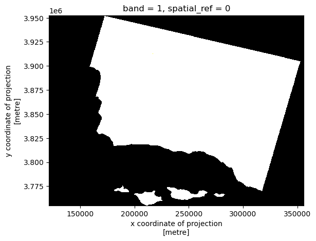
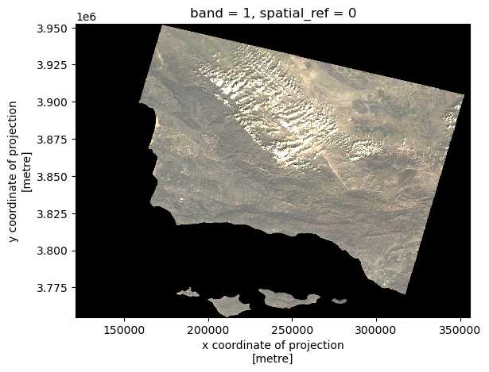
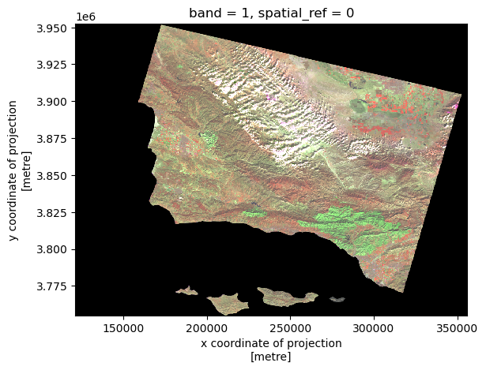
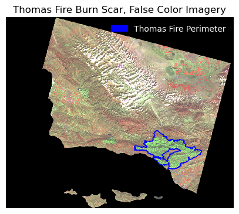
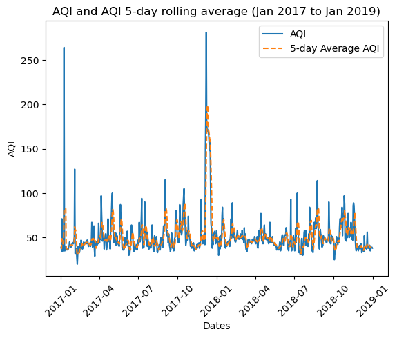

# importing general libraries
import os
import numpy as np
import pandas as pd
#importing task specific libraries
import geopandas as gpd
import matplotlib.pyplot as plt
import matplotlib.patches as mpatches #creating legends
import shapely
import xarray as xr
import rioxarray as rioxr
from shapely.geometry import Polygon
from rasterio.features import rasterize #rasterizing polygonsPurpose:
This exercise aims to: 1) create a false color image showing the fire scar of the Thomas fire in 2017 2) visualize the Thomas fire’s impact on air quality in Santa Barbara
Highlights of analysis:
- Fetch vector data from an online repository
- Visualize raster data using false color imagery
- Time series analysis
Dataset descriptions:
Landsat Burn Scar Data
- A simplified collection of bands (red, green, blue, near-infrared and shortwave infrared) from the Landsat Collection 2 Level-2 atmosperically corrected surface reflectance data, collected by the Landsat 8 satellite.
California Fire Perimeters
- A shapefile of fire perimeters in California during 2017. The complete file can be accessed in the CA state geoportal.
AQI Data
- We use Air Quality Index (AQI) data from the US Environmental Protection Agency to visualize the impact on the AQI of the 2017 Thomas Fire in Santa Barbara County.
References to datasets.
Landsat Data: The data was accessed and pre-processed in the Microsoft Planetary Computer to remove data outside land and coarsen the spatial resolution (Landsat Collection in MPC).
CA Shapefile: The complete file can be accessed in the CA state geoportal (see previous link). A local copy is stored in a hidden folder in this repo. (Accessed November, 2023)
AQI Data: https://aqs.epa.gov/aqsweb/airdata (Accessed October, 2023).
Accessing AQI data: 1. Go to EPA’s website on Air Quality Data Collected at Outdoor Monitors Across the US. 2. Under “Download Data” click on “Pre-generated Data Files” 3. Click on “Tables of Daily AQI” 4. Copy the URL to the 2017 Daily AQI by County zip file
daily_aqi_by_county_2017.zip5. Read in the data from the URL using thepd.read_csvfunction. We store it asaqi_17. 6. Read in the data for the 2018 Daily AQI by County zip file. We store it asaqi_18.
Importing Libraries and Functions
Importing datasets for 1) visualizing Thomas Fire Burn Scar and 2) AQI Impacts
#<-----BURN SCAR------->
# Open the LANDSAT NetCDF file using regular open_rasterio() method
landsat = rioxr.open_rasterio(os.path.join(os.getcwd(), 'data_fire', 'landsat8-2018-01-26-sb-simplified.nc'))
#open california fire perimeters file
ca_fire = gpd.read_file('~/thomas_fire_analysis/data_fire/California_Fire_Perimeters')
#<------AQI-DATA--------->
## AQI data for 2017
aqi_17 = pd.read_csv("https://aqs.epa.gov/aqsweb/airdata/daily_aqi_by_county_2017.zip")
## AQI data for 2018
aqi_18 = pd.read_csv("https://aqs.epa.gov/aqsweb/airdata/daily_aqi_by_county_2018.zip")Part 1: Visualizing Thomas Fire Burn Scar
Data Exploration: Understanding the dataset structures
#We simply print columns to look at ca_fire. Thomas fire will likely be a name under "FIRE_NAME" column.
#it's also got polygon geometries of the fire perimeters stored in the geometry column.
ca_fire.columnsIndex(['index', 'OBJECTID', 'YEAR_', 'STATE', 'AGENCY', 'UNIT_ID', 'FIRE_NAME',
'INC_NUM', 'ALARM_DATE', 'CONT_DATE', 'CAUSE', 'C_METHOD', 'OBJECTIVE',
'GIS_ACRES', 'COMMENTS', 'COMPLEX_NA', 'COMPLEX_IN', 'IRWINID',
'FIRE_NUM', 'DECADES', 'SHAPE_Leng', 'SHAPE_Area', 'geometry'],
dtype='object')#looking at the landsat data
landsat<xarray.Dataset>
Dimensions: (y: 731, x: 870, band: 1)
Coordinates:
* y (y) float64 3.952e+06 3.952e+06 ... 3.756e+06 3.755e+06
* x (x) float64 1.213e+05 1.216e+05 ... 3.557e+05 3.559e+05
* band (band) int64 1
spatial_ref int64 0
Data variables:
red (band, y, x) float64 ...
green (band, y, x) float64 ...
blue (band, y, x) float64 ...
nir08 (band, y, x) float64 ...
swir22 (band, y, x) float64 ...xarray.Dataset
- y: 731
- x: 870
- band: 1
- y(y)float643.952e+06 3.952e+06 ... 3.755e+06
- axis :
- Y
- crs :
- EPSG:32611
- long_name :
- y coordinate of projection
- resolution :
- -30
- standard_name :
- projection_y_coordinate
- units :
- metre
- _FillValue :
- nan
array([3952395., 3952125., 3951855., ..., 3755835., 3755565., 3755295.])
- x(x)float641.213e+05 1.216e+05 ... 3.559e+05
- axis :
- X
- crs :
- EPSG:32611
- long_name :
- x coordinate of projection
- resolution :
- 30
- standard_name :
- projection_x_coordinate
- units :
- metre
- _FillValue :
- nan
array([121305., 121575., 121845., ..., 355395., 355665., 355935.])
- band(band)int641
array([1])
- spatial_ref()int640
- crs_wkt :
- PROJCS["WGS 84 / UTM zone 11N",GEOGCS["WGS 84",DATUM["WGS_1984",SPHEROID["WGS 84",6378137,298.257223563]],PRIMEM["Greenwich",0],UNIT["degree",0.0174532925199433,AUTHORITY["EPSG","9122"]],AUTHORITY["EPSG","4326"]],PROJECTION["Transverse_Mercator"],PARAMETER["latitude_of_origin",0],PARAMETER["central_meridian",-117],PARAMETER["scale_factor",0.9996],PARAMETER["false_easting",500000],PARAMETER["false_northing",0],UNIT["metre",1],AXIS["Easting",EAST],AXIS["Northing",NORTH],AUTHORITY["EPSG","32611"]]
- semi_major_axis :
- 6378137.0
- semi_minor_axis :
- 6356752.314245179
- inverse_flattening :
- 298.257223563
- reference_ellipsoid_name :
- WGS 84
- longitude_of_prime_meridian :
- 0.0
- prime_meridian_name :
- Greenwich
- geographic_crs_name :
- WGS 84
- horizontal_datum_name :
- World Geodetic System 1984
- projected_crs_name :
- WGS 84 / UTM zone 11N
- grid_mapping_name :
- transverse_mercator
- latitude_of_projection_origin :
- 0.0
- longitude_of_central_meridian :
- -117.0
- false_easting :
- 500000.0
- false_northing :
- 0.0
- scale_factor_at_central_meridian :
- 0.9996
- spatial_ref :
- PROJCS["WGS 84 / UTM zone 11N",GEOGCS["WGS 84",DATUM["WGS_1984",SPHEROID["WGS 84",6378137,298.257223563]],PRIMEM["Greenwich",0],UNIT["degree",0.0174532925199433,AUTHORITY["EPSG","9122"]],AUTHORITY["EPSG","4326"]],PROJECTION["Transverse_Mercator"],PARAMETER["latitude_of_origin",0],PARAMETER["central_meridian",-117],PARAMETER["scale_factor",0.9996],PARAMETER["false_easting",500000],PARAMETER["false_northing",0],UNIT["metre",1],AXIS["Easting",EAST],AXIS["Northing",NORTH],AUTHORITY["EPSG","32611"]]
- GeoTransform :
- 121170.0 270.0 0.0 3952530.0 0.0 -270.0
array(0)
- red(band, y, x)float64...
- add_offset :
- 0.0
- coordinates :
- time
- scale_factor :
- 1.0
- _FillValue :
- 0.0
[635970 values with dtype=float64]
- green(band, y, x)float64...
- add_offset :
- 0.0
- coordinates :
- time
- scale_factor :
- 1.0
- _FillValue :
- 0.0
[635970 values with dtype=float64]
- blue(band, y, x)float64...
- add_offset :
- 0.0
- coordinates :
- time
- scale_factor :
- 1.0
- _FillValue :
- 0.0
[635970 values with dtype=float64]
- nir08(band, y, x)float64...
- add_offset :
- 0.0
- coordinates :
- time
- scale_factor :
- 1.0
- _FillValue :
- 0.0
[635970 values with dtype=float64]
- swir22(band, y, x)float64...
- add_offset :
- 0.0
- coordinates :
- time
- scale_factor :
- 1.0
- _FillValue :
- 0.0
[635970 values with dtype=float64]
Updates the files and project them into the same CRS
# drop the dimensions
landsat = landsat.squeeze()
#see if crs's are the same
print(landsat.rio.crs == ca_fire.crs) ## no! they are not the same. We'll have to convert them to the same CRS.
## reproject ca_fire crs to landsat crs
ca_fire = ca_fire.to_crs(landsat.rio.crs)
print('CRS match:', ca_fire.crs == landsat.rio.crs)False
CRS match: TruePlotting a true color image of Landsat data using red, green, and blue.
#select the red green and blue bands in that order
landsat[['red', 'green', 'blue']].to_array().plot.imshow()Clipping input data to the valid range for imshow with RGB data ([0..1] for floats or [0..255] for integers).<matplotlib.image.AxesImage at 0x7f793abf8790>
We can adjust the scale used for plotting the bands to get a true color image. > The issue here is the clouds: their RGB values are outliers and cause the other values to be squished when plotting.
# parameter robust (bool, optional) – If True and vmin or vmax are absent, the colormap range is computed with 2nd and 98th percentiles instead of the extreme values.
landsat[['red', 'green', 'blue']].to_array().plot.imshow(robust = True)<matplotlib.image.AxesImage at 0x7f793aab65e0>
Plotting a false color image
Creating a false color image by plotting the short-wave infrared (swir22), near-infrared, and red variables (in that order).
# creating the false color image and plotting it to see results
fc = landsat[['nir08', 'swir22', 'red']]
#show
fc.to_array().plot.imshow(robust = True)<matplotlib.image.AxesImage at 0x7f793a9381c0>
Cleaning up ca_fire dataset to select for the desired fire perimeter
#the column titles are capitalized and some titles have strange syntax.
#Converting to lower and doing minor cleanup.
ca_fire.columns = ca_fire.columns.str.lower()
ca_fire.rename(columns={'year_': 'year'}, inplace=True)
#setting the index column to "index" in case it needs to be preserved, and resetting the default index column.
ca_fire.set_index('index').reset_index().head(4)| index | objectid | year | state | agency | unit_id | fire_name | inc_num | alarm_date | cont_date | ... | gis_acres | comments | complex_na | complex_in | irwinid | fire_num | decades | shape_leng | shape_area | geometry | |
|---|---|---|---|---|---|---|---|---|---|---|---|---|---|---|---|---|---|---|---|---|---|
| 0 | 19836 | 41429 | 2017 | CA | CCO | VNC | BROOK | 00042450 | 2017-05-23 | 2017-05-24 | ... | 10.043819 | per walked track | None | None | None | None | 2010 | 1246.055781 | 59473.666651 | POLYGON ((329836.442 3778607.342, 329858.049 3... |
| 1 | 19837 | 41430 | 2017 | CA | CCO | VNC | PACIFIC | 00075307 | 2017-09-09 | 2017-09-09 | ... | 1.190109 | Final Walked track. Small spot to the north east | None | None | None | None | 2010 | 561.418202 | 7081.369481 | POLYGON ((283091.321 3802354.285, 283072.171 3... |
| 2 | 19838 | 41431 | 2017 | CA | CCO | VNC | GRADE | 00054660 | 2017-07-04 | 2017-07-05 | ... | 47.194027 | None | None | None | None | None | 2010 | 2587.259697 | 279911.825212 | POLYGON ((317706.428 3786632.044, 317720.407 3... |
| 3 | 19839 | 41432 | 2017 | CA | CCO | VNC | PACIFICA | 00051791 | 2017-06-24 | 2017-06-24 | ... | 1.158548 | GPS track | None | None | None | None | 2010 | 501.178102 | 6859.664843 | POLYGON ((330068.430 3778089.747, 330078.179 3... |
4 rows × 23 columns
Maping the false color image with Thomas Fire perimeter
Create a map showing the shortwave infrared/nir/ ed false color image together with the Thomas fire perimeter. Customize it appropriately.
#select the row with fire_name of THOMAS, because we want the Thomas fire.
thomas_shp = ca_fire[ca_fire['fire_name'] == 'THOMAS']
##check out what it looks like##
thomas_shp| index | objectid | year | state | agency | unit_id | fire_name | inc_num | alarm_date | cont_date | ... | gis_acres | comments | complex_na | complex_in | irwinid | fire_num | decades | shape_leng | shape_area | geometry | |
|---|---|---|---|---|---|---|---|---|---|---|---|---|---|---|---|---|---|---|---|---|---|
| 436 | 20274 | 41874 | 2017 | CA | USF | VNC | THOMAS | 00003583 | 2017-12-04 | 2018-01-12 | ... | 281790.875 | CONT_DATE based on Inciweb | None | None | None | None | 2010 | 540531.887458 | 1.681106e+09 | MULTIPOLYGON (((259241.263 3814482.913, 259193... |
1 rows × 23 columns
Final Output
Plotting fire perimeter + false color imagery
##--------------PLOT---------------##
fig, ax = plt.subplots(figsize = (5,5)) #setting up the figure & axis
plt.axis("off") # turn axis off
fc.to_array().plot.imshow(robust = True, ax=ax) #plotting the false color imagery, and making sure it's on the same plot as the other plots
thomas_shp.plot(ax = ax, color="none", edgecolor="blue")
# use mpatches.Patch to update labels & legend
thomas_fire_border_patch = mpatches.Patch(color='blue', # change color to blue
label='Thomas Fire Perimeter') # update label
## add a legend
ax.legend(handles = [thomas_fire_border_patch],
frameon=False, # don't inlcude legend frame
loc = "upper right", # adjusting location of legend
labelcolor = "white") # adjust text visibility
ax.set_title('Thomas Fire Burn Scar, False Color Imagery')
# displaying plot
plt.show()
Part 2: Thomas Fire AQI Impact Analysis
Data Exploration
# Look at the structure of aqi_17. aqi_18 has the same structure.
aqi_17| State Name | county Name | State Code | County Code | Date | AQI | Category | Defining Parameter | Defining Site | Number of Sites Reporting | |
|---|---|---|---|---|---|---|---|---|---|---|
| 0 | Alabama | Baldwin | 1 | 3 | 2017-01-01 | 21 | Good | PM2.5 | 01-003-0010 | 1 |
| 1 | Alabama | Baldwin | 1 | 3 | 2017-01-04 | 22 | Good | PM2.5 | 01-003-0010 | 1 |
| 2 | Alabama | Baldwin | 1 | 3 | 2017-01-10 | 19 | Good | PM2.5 | 01-003-0010 | 1 |
| 3 | Alabama | Baldwin | 1 | 3 | 2017-01-13 | 30 | Good | PM2.5 | 01-003-0010 | 1 |
| 4 | Alabama | Baldwin | 1 | 3 | 2017-01-16 | 16 | Good | PM2.5 | 01-003-0010 | 1 |
| ... | ... | ... | ... | ... | ... | ... | ... | ... | ... | ... |
| 326796 | Wyoming | Weston | 56 | 45 | 2017-12-27 | 39 | Good | Ozone | 56-045-0003 | 1 |
| 326797 | Wyoming | Weston | 56 | 45 | 2017-12-28 | 36 | Good | Ozone | 56-045-0003 | 1 |
| 326798 | Wyoming | Weston | 56 | 45 | 2017-12-29 | 31 | Good | Ozone | 56-045-0003 | 1 |
| 326799 | Wyoming | Weston | 56 | 45 | 2017-12-30 | 31 | Good | Ozone | 56-045-0003 | 1 |
| 326800 | Wyoming | Weston | 56 | 45 | 2017-12-31 | 26 | Good | Ozone | 56-045-0003 | 1 |
326801 rows × 10 columns
# I want see the shape of each dataframe
print("aqi 2017 shape: ", aqi_17.shape, "\naqi 2018 shape: ", aqi_18.shape)aqi 2017 shape: (326801, 10)
aqi 2018 shape: (327537, 10)We currently have two separate dataframes. We will need to “glue” them one on top of the other. The pandas function pd.concat() can achieve this.
We pass [aqi_17, aqi_18] as the input of pd.concat() and store the output as aqi.
In the next line run aqi.
👀 NOTE: When we concatenate like this, without any extra parameters for pd.concat() the indices for the two dataframes are just “glued together”, the index of the resulting dataframe is not updated to start from 0. Notice the index of aqi ends in 327536 while it has 654338 rows.
# concatenate, or "glue" aqi_17 and aqi_18 together
aqi = pd.concat([aqi_17, aqi_18])
aqi| State Name | county Name | State Code | County Code | Date | AQI | Category | Defining Parameter | Defining Site | Number of Sites Reporting | |
|---|---|---|---|---|---|---|---|---|---|---|
| 0 | Alabama | Baldwin | 1 | 3 | 2017-01-01 | 21 | Good | PM2.5 | 01-003-0010 | 1 |
| 1 | Alabama | Baldwin | 1 | 3 | 2017-01-04 | 22 | Good | PM2.5 | 01-003-0010 | 1 |
| 2 | Alabama | Baldwin | 1 | 3 | 2017-01-10 | 19 | Good | PM2.5 | 01-003-0010 | 1 |
| 3 | Alabama | Baldwin | 1 | 3 | 2017-01-13 | 30 | Good | PM2.5 | 01-003-0010 | 1 |
| 4 | Alabama | Baldwin | 1 | 3 | 2017-01-16 | 16 | Good | PM2.5 | 01-003-0010 | 1 |
| ... | ... | ... | ... | ... | ... | ... | ... | ... | ... | ... |
| 327532 | Wyoming | Weston | 56 | 45 | 2018-12-27 | 36 | Good | Ozone | 56-045-0003 | 1 |
| 327533 | Wyoming | Weston | 56 | 45 | 2018-12-28 | 35 | Good | Ozone | 56-045-0003 | 1 |
| 327534 | Wyoming | Weston | 56 | 45 | 2018-12-29 | 35 | Good | Ozone | 56-045-0003 | 1 |
| 327535 | Wyoming | Weston | 56 | 45 | 2018-12-30 | 31 | Good | Ozone | 56-045-0003 | 1 |
| 327536 | Wyoming | Weston | 56 | 45 | 2018-12-31 | 35 | Good | Ozone | 56-045-0003 | 1 |
654338 rows × 10 columns
Data Cleaning
Format aqi dataframe nicely so we can select only data from SB County - initial column names: notice caps and spaces (difficult to work with!) - re-assign the column names - .str.lower() makes them lower case - re-assign the column names again - .str.replace(’ ‘,’’) replaces the space for
# perform changes in one line:
aqi.columns = aqi.columns.str.lower().str.replace(' ','_')In the next cells we:
- Select only data from
Santa Barbaracounty and store in a new variableaqi_sb. - Remove the
state_name,county_name,state_codeandcounty_codecolumns fromaqi_sb. - Use the
dtypesattribute to check the data types of the columns.
# select rows in county_name that are "Santa Barbara" and then use drop to remove state
# name, county name, state_code, and county_code columns
aqi_sb = aqi[aqi.county_name == "Santa Barbara"].drop(columns = ["state_name", "county_name", "state_code", "county_code"])
aqi_sb.dtypes
## I see that the date column is an object type. it should be a datetime object! date object
aqi int64
category object
defining_parameter object
defining_site object
number_of_sites_reporting int64
dtype: objectIn the next cells we:
- Update the date column of
aqi_sbto be a datetime object. - Update the index of
aqi_sbto be the date column.
# select date column and update it to datetime, then reset the index using set_index
aqi_sb["date"] = pd.to_datetime(aqi_sb.date)
aqi_sb.set_index('date', inplace=True)Make an average over a rolling window.
- We can create a new variable
five_day_averagewith the mean of the AQI over a 5-day rolling window. To do this use therolling - https://pandas.pydata.org/pandas-docs/stable/reference/api/pandas.Series.rolling.html > Rolling() is a method for pandas.series that provides rolling window calculations the parameter ‘5D’ indicates we want the window to be 5 days. This is a lazy method (think groupby), we need to specify what we want to calculate over each window here we add the aggregator function mean() this indicates we want the mean over each window and we get a pd.Series as ouput
#Now we add the mean of the AQI over a 5-day rolling window as a new column named 'five_day_average' to the `aqi_sb` dataframe.
aqi_sb["five_day_average"] = aqi_sb.aqi.rolling('5D').mean()
aqi_sb| aqi | category | defining_parameter | defining_site | number_of_sites_reporting | five_day_average | |
|---|---|---|---|---|---|---|
| date | ||||||
| 2017-01-01 | 39 | Good | Ozone | 06-083-4003 | 12 | 39.000000 |
| 2017-01-02 | 36 | Good | Ozone | 06-083-4003 | 11 | 37.500000 |
| 2017-01-03 | 71 | Moderate | PM10 | 06-083-4003 | 12 | 48.666667 |
| 2017-01-04 | 34 | Good | Ozone | 06-083-4003 | 13 | 45.000000 |
| 2017-01-05 | 37 | Good | Ozone | 06-083-4003 | 12 | 43.400000 |
| ... | ... | ... | ... | ... | ... | ... |
| 2018-12-27 | 37 | Good | Ozone | 06-083-1025 | 11 | 38.600000 |
| 2018-12-28 | 39 | Good | Ozone | 06-083-1021 | 12 | 38.600000 |
| 2018-12-29 | 39 | Good | Ozone | 06-083-1021 | 12 | 38.200000 |
| 2018-12-30 | 39 | Good | Ozone | 06-083-1021 | 12 | 37.800000 |
| 2018-12-31 | 38 | Good | Ozone | 06-083-1021 | 12 | 38.400000 |
730 rows × 6 columns
Final Output: Graphing AQI rolling averages
Making a line plot showing both the daily AQI and the 5-day average (5-day average on top of the AQI). Updating the title and colors of the graph.
# use pyplot to plot the graph. set x and y variables (there are two y variables)
x = aqi_sb.index
y1 = aqi_sb.aqi
y2 = aqi_sb.five_day_average
plt.plot(x, y1, label = 'AQI')
plt.plot(y2, linestyle='--', label = '5-day Average AQI')
plt.xlabel('Dates')
plt.ylabel('AQI')
plt.xticks(rotation=45)
plt.title('AQI and AQI 5-day rolling average (Jan 2017 to Jan 2019)')
plt.legend()
plt.show()
We notice that:
The AQI increases drastically during the Thomas fire (December of 2018) along with a drastic increase in the 5 day rolling average. The air quality was over 250 AQI.
Citation
BibTeX citation:
@online{hamilton2023,
author = {Hamilton, Flora},
title = {Visualizing the {Thomas} {Fire’s} {Burn} {Scar} and {AQI}
Impacts},
date = {2023-12-11},
url = {https://floraham.github.io/Projects/2023-12-11-thomas-fire-analysis},
langid = {en}
}
For attribution, please cite this work as:
Hamilton, Flora. 2023. “Visualizing the Thomas Fire’s Burn Scar
and AQI Impacts .” December 11, 2023. https://floraham.github.io/Projects/2023-12-11-thomas-fire-analysis.